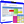

Ergebnisse anzeigen: Ausgabe
Im Funktionsblock Ausgabe können Sie sich die berechneten Ergebnisse Ihrer Dateien in den Listen darstellen lassen. Sie haben jeweils individuelle Auswahlmöglichkeiten. Entscheiden Sie, wie Sie die einzelnen Elemente aus den Strukturen der Planungseinheiten, Konten, Zeiteinheiten sowie Segmenten miteinander kombinieren möchten. (Siehe Abschnitt Direktauswahlen)
Es stehen Ihnen darüber hinaus die Ausgabevarianten Anteilstabelle, Hitliste und ABC-Analyse als Analyse-Methoden zur Verfügung. Zur besseren optischen Darstellung ist in Kosy Enterprise ein umfangreiches Grafik-Tool eingebunden.
In Kosy Enterprise können Sie die Ausgabe auch dazu nutzen, um Daten direkt einzugeben oder zu verändern. Hand in Hand mit der Eingabe von Werten in der Ausgabe geht eine Live-Berechnung, die Ihre Eingabe sofort berechnet und die Ansicht mit den neuen Zahlen aktualisiert.
Ergebnisse
Die Vierdimensionalität der Kosy Enterprise-Datei ermöglicht das Betrachten der Daten aus verschiedenen Perspektiven. Über die Wahl der Listenansicht entscheiden Sie sich, welche Dimension Sie in welcher Ebene sehen möchten.
Liste 1 beispielsweise zeigt eine bestimmte Planungseinheit im Blattbereich und zu dieser Planungseinheit alle Konten in den Zeilen des Blattes. Dies könnte je nach Kosy Enterprise-Modell ein Kostenstellenbericht, die Erlös- und Absatzübersicht eines Sonderkunden oder auch der detaillierte Aufwand eines Auftrages sein.
Liste 3 dagegen zeigt ein Konto im Blattbereich und alle zugehörigen Planungseinheiten im Zeilenbereich. Dies wäre dann vielleicht der HT-Verbrauch in kWh über alle Kunden.
Jede Liste ist auch symbolisch mit den Farben der Dimensionen (blau, grün, orange, gelb) dargestellt, womit eine schnelle Zuordnung der Dimensionen in die Ebenen gegeben ist.
Übersicht
In der Übersicht finden Sie eine Auflistung aller in der Ausgabe angelegten Listen der ausgewählten Datei.
Liste
Haben Sie Ihre gewünschte Liste in der Übersicht gewählt, so wechseln Sie in die Registerkarte Liste, wo Sie in die Ausgabe Ihrer Werte gelangen. Zusätzlich zu dem Druck der Registerkarte Liste können Sie über das Drücken der Alt Taste und gleichzeitigem Doppelklick direkt in die durch die Maus markierte Liste gehen. Die Ausgabe teilt sich zunächst in drei Bereiche: Bearbeitungsleiste, Ansicht und Navigationsleiste.
Bearbeitungsleiste
Über die Bearbeitungsleiste haben Sie die Möglichkeit, Ergebnisse berechnen zu lassen, eine Ansicht zu wählen, eine Listenart zu wählen, die Dualanzeige ein-/auszublenden, den Expertenmodus ein-/auszuschalten, die Ansicht als Kalkulationstabelle zu exportieren, die Ansicht als PDF-Dokument zu exportieren oder die Ansicht zu drucken. Darüber hinaus finden Sie hier die Blattdimension sowie die Stapeldimension Ihrer Ansicht, welche Sie durch einen Doppelklick auf das Wort „Blatt“ bzw. „Stapel“ ein- oder ausblenden können. Ein einfacher Linksklick auf das Element in der Blatt- oder Stapeldimension öffnet den Strukturbaum der Dimension, was Ihnen die Auswahl unterschiedlicher Elemente direkt in der Ausgabe ermöglicht.
Hinweis
Sie finden bei eingeschaltetem Filter in den jeweiligen Dimensionen nur Elemente, die Sie zuvor in der Übersicht über Sammlungsauswahlen oder Direktauswahlen ausgewählt haben bzw. nicht ausgeschlossen haben. Zum Einblenden aller Elemente drücken Sie Strg+F7 oder öffnen Sie mit Rechtsklick das Kontextmenü und entfernen Sie die Option unter Anzeige > Filter > nur ausgewählte Elemente.
Ergebnisse berechnen
Haben Sie die Berechnung abgebrochen oder möchten Sie überprüfen, ob andere Benutzer Werte in Kosy Enterprise hinterlegt haben, so betätigen Sie den Taschenrechner . Falls keine Änderungen vorgenommen wurden, so meldet Kosy Enterprise, dass die Ergebnisse bereits auf dem aktuellen Stand sind. Falls Sie die Berechnung forcieren möchten, drücken Sie neben dem Taschenrechner auf das Dreieck und wählen Sie "Ergebnisse ohne Prüfung berechnen".
Ansicht auswählen
Über das Symbol  wählen Sie Ihre bereits definierten Listen, vordefinierten Listenansichten oder die freien Ansichten, bei welchen Sie eigenständig entscheiden, welche Dimensionen in Zeilen, Spalten, Blatt und Stapel dargestellt werden.
wählen Sie Ihre bereits definierten Listen, vordefinierten Listenansichten oder die freien Ansichten, bei welchen Sie eigenständig entscheiden, welche Dimensionen in Zeilen, Spalten, Blatt und Stapel dargestellt werden.
Hinweis
Unter "Listenansichten" wird die von Ihnen derzeit gewählte Ansicht in Fettschrift dargestellt. Diese können Sie in der Übersicht der Listen an der Liste hinterlegen. Die Liste wird initial immer mit der hinterlegten Listenansicht aufgerufen.
Listenart wählen
Wechseln Sie zwischen unterschiedlichen Auswertungsmethoden, indem Sie über  eine Listenart wählen. Bei Absolutwerten werden Ihnen Ihre Ergebnisse dargestellt, wählen Sie die Anteilstabelle, so erscheint eine Darstellung absoluter sowie prozentualer Werte. Nutzen Sie die Hitliste, um eine größenabhängige Sortierung Ihrer Werte zu erhalten oder entscheiden Sie sich für die ABC-Analyse, wenn Sie wissen möchten, mit welchen 20% Ihrer Kunden Sie 80% Ihres Umsatzes erwirtschaften.
eine Listenart wählen. Bei Absolutwerten werden Ihnen Ihre Ergebnisse dargestellt, wählen Sie die Anteilstabelle, so erscheint eine Darstellung absoluter sowie prozentualer Werte. Nutzen Sie die Hitliste, um eine größenabhängige Sortierung Ihrer Werte zu erhalten oder entscheiden Sie sich für die ABC-Analyse, wenn Sie wissen möchten, mit welchen 20% Ihrer Kunden Sie 80% Ihres Umsatzes erwirtschaften.
Dualanzeige ein-/ausblenden
Durch einen Linksklick auf  blenden Sie die Dualanzeige ein bzw. aus. Über das Dreieck neben dem Symbol entscheiden Sie, welche Dualanzeige erscheinen soll. Hierbei haben Sie die Wahl zwischen der Buchungsansicht, welche Ihnen die Einzelbelege der angewählten Zelle anzeigt, der Synchronansicht, welche Ihnen eine gleichzeitige Ansicht zweier Blätter wiedergibt, und der Ad-hoc-Grafik, um eine grafische Darstellung Ihrer angewählten Zeile zu erzeugen.
blenden Sie die Dualanzeige ein bzw. aus. Über das Dreieck neben dem Symbol entscheiden Sie, welche Dualanzeige erscheinen soll. Hierbei haben Sie die Wahl zwischen der Buchungsansicht, welche Ihnen die Einzelbelege der angewählten Zelle anzeigt, der Synchronansicht, welche Ihnen eine gleichzeitige Ansicht zweier Blätter wiedergibt, und der Ad-hoc-Grafik, um eine grafische Darstellung Ihrer angewählten Zeile zu erzeugen.
Hinweis
Führen Sie einen Doppelklick auf die Trennlinie beider Ansichten durch, um eine gleichmäßige Verteilung auf dem Bildschirm zu erhalten. Führen Sie einen Rechtsklick auf die Trennlinie durch, damit die Ansichten nebeneinander bzw. untereinander angeordnet werden.
Die Buchungsansicht ermöglicht Ihnen die Ansicht von Einzelbuchungssätzen. Einzelbuchungssätze können mit beliebig vielen Buchungsfeldern aus dem jeweiligen Basissystem definiert werden und auch auf Summen angezeigt werden.
.png "Liste (1)")
Darstellung Buchungsansicht
Die Synchronansicht stellt Ihnen zwei parallele Ansichten dar. Verändern Sie denn Zelfokus auf der einen Seiten, so ändert er sich auch auf der anderen, sofern dies entsprechend eingestellt ist. Sie können diese Einstellung über den weißen Pfeil in der Bearbeitungsleiste ändern.
.png "Liste (2)")
Darstellung Synchronansicht
Mithilfe der Ad-hoc-Grafik können ausgewählte Elemente eines Datensatzes im Überblick dargestellt werden. Wird der zu betrachtende Datensatz geändert, passt sich die grafische Darstellung automatisch den neuen Daten an.
.png "Liste (3)")
Darstellung Ad-hoc-Grafik
Ansicht als Kalkulationstabelle exportieren
Durch einen Linksklick auf  können Sie ihre Liste im OpenDocument-, im Microsoft Open XML- oder im CSV-Format exportieren. Es erscheint ein Assistent, in welchem Sie auswählen, ob und welche Formatierungen aus Kosy Enterprise übernommen werden.
können Sie ihre Liste im OpenDocument-, im Microsoft Open XML- oder im CSV-Format exportieren. Es erscheint ein Assistent, in welchem Sie auswählen, ob und welche Formatierungen aus Kosy Enterprise übernommen werden.
Ansicht als PDF-Dokument exportieren
Ihre Liste wird durch einen Linksklick auf im PDF-Format exportiert. Alternativ können Sie über das Dreieck neben dem Knopf den Export über einen Assistenten vornehmen, in welchem Sie auswählen, ob und welche Formatierungen aus Kosy Enterprise übernommen werden.
Ansicht drucken
Über das Drucksymbol  öffnet sich ein Assistent, der Sie durch die Druckeinstellungen zum erfolgreichen Druck Ihrer Ansicht führt.
öffnet sich ein Assistent, der Sie durch die Druckeinstellungen zum erfolgreichen Druck Ihrer Ansicht führt.
Ansicht
In der Ansicht finden Sie die von Ihnen gewünschte Spalten- und Zeilendarstellung Ihrer Daten. Hier können Sie durch einen Linksklick auf die entsprechende Zelle Ihre Werte über die Tastatur eingeben. Voraussetzung dafür ist u.a., dass die aktuelle Liste in der Übersicht die Verwendung „Ein- und Ausgabe“ eingesetzt hat und dass in jeder Dimension (Zeile, Spalte, Blatt, Stapel) ein Eingabeelement ausgewählt ist. Eingabeelemente sind üblicherweise nicht berechnende Elemente der untersten Ebene im Strukturbaum. Durch einen Rechtsklick auf die Zeilen, Spalten oder Zellen öffnet sich das dementsprechende Menü. Durch einen Rechtsklick auf die Tabellenbeschriftung öffnen Sie das Menü "Spaltenansicht". In diesem können Sie weitere Anzeigeelemente, wie die Anzahl der Unterelemente pro Verdichtung, auswählen. Die einzelnen Kontextmenüs werden im Folgenden erläutert.
Möchten Sie nähere Informationen zu einzelnen Elementen oder Zellen haben, so stellen Sie Ihren Mauszeiger mit gedrückter linker Maustaste auf das entsprechende Element. Es öffnet sich ein Fenster mit Element- bzw. Zellinformationen. Dies ist auch im Strukturbaum der Blatt- und Stapelebene möglich. Detaillierte Informationen erhalten Sie, indem Sie zusätzlich zur gedrückten linken Maustaste die Alt-Taste gedrückt halten.
Hinweis
Wenn Sie mit der Maus über eine Spaltenüberschrift fahren, werden in der oberen rechten Ecke zwei Pfeilspitzen angezeigt. Darüber lassen sich die Werte in den Spalten aufsteigend oder absteigend sortieren, indem Sie einen einfachen Linksklick auf die Pfeilspitzen ausführen. Die Werte werden dann in absteigender Reihenfolge sortiert. Durch einen erneuten Linksklick wird eine aufsteigende Reihenfolge erzeugt. Möchten Sie die Sortierung aufheben, so führen Sie abermals einen Linksklick aus. Die Sortierung wird aufgehoben.
Zeilenmenü
Sie finden das Zeilenmenü durch einen einfachen Rechtsklick auf den Titel einer Zeile.
.png "Liste (4)")
Kontextmenü Zeilenmenü
Zeilenelement bearbeiten 
Sie können hier in der Ausgabe nachträglich z.B. den Titel oder die Bezeichner des gewählten Elementes abändern. Hierzu öffnet sich ein Assistent, der Ihnen die unterschiedlichen Eingabemöglichkeiten anzeigt. Bitte beachten Sie, dass sich hierbei der Stammsatz des Elementes verändert und dass sich die Änderungen mandantenweit auf alle Strukturen auswirkt.
Standardformatierung 
Über den Menüpunkt Standardformatierung gelangen Sie zu Formatanweisungen (siehe Abschnitt Listenformate) und Formatvorlagen (siehe Abschnitt Formatvorlagen). Hier finden Sie die unter dem Menüpunkt Layout angelegten Formatvorlagen sowie Formatanweisungen für das entsprechende Listenformat der Liste, welche Sie hier nachträglich ändern können. Dazu öffnet sich ein Assistent, der Ihnen erlaubt, in der Ausgabe Ihr Standardlayout zu ändern.
Hinweis
Die Datensätze der Formatanweisungen sowie Formatvorlagen sind ausgegraut, wenn die ausgewählte Zeile/Spalte/Zelle nicht von der Standardformatierung betroffen ist. Trotz alledem können die Formatierungen geändert werden.
.png "Liste (5)")
Menü Standardformatierung
individuelle Formatierung 
Wählen Sie die individuelle Formatierung, um in der Ausgabe individuelle Anpassungen am Layout der Ausgabe vorzunehmen. Hier können Sie alle Formatierungen wie bei einer Formatvorlage der markierten Zeilen/Spalten/Zellen hinterlegen (z.B. Schrift, Hintergrundfarbe, Ränder etc.). Dazu wählen Sie die entsprechende Formatierung im Kontextmenü, alternativ wählen Sie bitte den Menüpunkt Formatierung bearbeiten/anlegen. Hier können Sie bequem alle Formatierungsmöglichkeiten über einen Assistenten pflegen.
Möchten Sie diese Formatierung auf andere Zeilen übertragen, so wählen Sie den Menüpunkt Formatierung merken. Markieren Sie anschließend die Zeile, auf welche die Formatierung übertragen werden soll und wählen im gleichen Kontextmenü Formatierung anwenden oder führen einen Linksklick mit gedrückter Alt -Taste auf die gewünschte Zeile aus.
Möchten Sie die Formatierung löschen, so wählen Sie den Menüpunkt Formatierung löschen. Alle Formatierungen des markierten Bereichs werden daraufhin entfernt. Über "alle Formatierungen löschen" werden alle individuellen Formatierungen in der Liste gelöscht, unabhängig davon welche Zeile/Spalte/Zelle zuvor markiert wurde.
Hinweis
individuelle Formatierungen brauchen eine gewisse Rechenzeit für Ihre Anwendung. Sie sollten daher sparsam verwendet werden. Für die Formatierung mehrerer Zeilen/Spalten/Zellen bieten sich Formatvorlagen an.
.png "Liste (6)")
Menü individuelle Formatierung
Formatierungsoptionen
Über die Formatierungsoptionen entscheiden Sie, welche Formatierungen Sie aktivieren und welche Formatierungen Sie deaktivieren möchten. So können Sie hier die Standardformatierungen oder individuellen Formatierungen ausblenden. Ebenso können die Anzeigeeinstellungen (hinterlegt im Kontextmenüpunkt Anzeige s. unten) oder Wertbedingungen (siehe Abschnitt Listenformatt) aus- oder eingeblendet werden, indem Sie den jeweiligen Menüpunkt mit einem einfachen Linksklick anwählen. Der angezeigte Haken vor dem Menüpunkt verschwindet daraufhin.
.png "Liste (7)")
Menü Formatierungsoptionen
Markierung
Über die Funktion Markierung haben Sie die Möglichkeit, die Struktur, die Dimension oder die Ebene zu markieren.
Kopieren 
Über die Funktion Kopieren haben Sie die Möglichkeit, den Bezeichner des zuletzt ausgewählten Elementes in die Zwischenablage zu kopieren.
Sortieren
Sortieren Sie Ihren Strukturbaum über die Funktion Sortieren, damit bspw. Ihre Konten aufsteigend nach Kontonummer je Verdichtung angezeigt werden. Hierfür öffnet sich ein Assistent, der Ihnen erlaubt, die Entscheidungen für die Sortierung zu treffen.
Hinweis
Sortieren Sie Elemente im Strukturbaum in der Ausgabe, so werden diese Elemente auch im jeweiligen Strukturbaum im Hauptmenüpunkt Dimensionen verändert. Die Änderungen gelten somit für alle Dateien, die diese Struktur enthalten.
Suchen 
Um ein bestimmtes Element direkt zu erreichen, wählen Sie die Funktion Suchen. Hierbei geben Sie über einen Assistenten Titel, Bezeichner oder auch den Alternativtitel an. Nach erfolgreicher Suche ist das gefundene Element direkt markiert.
Hinweis
Sollte es mehrere Suchergebnisse geben, wird zunächst das erste Ergebnis aus dem Strukturbaum markiert. Über die Navigationsleiste können Sie zu den weiteren Suchergebnisse springen (s. dazu "Strukturbäume und Strukturen").
Auf- und zuklappen
Vergrößern Sie die Übersichtlichkeit Ihrer Ausgabe, indem Sie den Strukturbaum teilweise zusammenklappen. Sie entscheiden damit in der Ausgabe vollkommen flexibel, welche Summen detailliert dargestellt werden sollen und bei welchen die Anzeige des Summenelementes ausreichend ist. Ebenso können Sie hier entscheiden, welche Spalten angezeigt werden sollen und welche nicht.
Anzeige
Im Menüpunkt Anzeige wählen Sie die Abbildungsweise Ihrer Elemente, indem Sie entscheiden, ob ein Bezeichner angezeigt werden soll und wenn ja, mit dem gewählten Präfix oder nicht. Auf gleichem Wege entscheiden Sie über Titel und Alternativtitel, welche der beiden Informationen eingeblendet werden soll und in welcher Darstellungsform. Entscheiden Sie danach, ob in den Zeilen oder Spalten Textumbrüche vollzogen werden sollen, um bspw. große Spaltenbreiten zu vermeiden.
Um die Darstellung des Strukturbaumes anzupassen, wählen Sie die Menüpunkte Filter, Sortierung, Hervorhebung oder Farben und Symbole.
Im Menüpunkt Filter können Sie entscheiden, welche Elemente Sie sehen möchten (z.B. nur signifikante Elemente; die „Signifikanz“ bezieht sich hier auf das Vorhandensein von Werten; eine „signifikante Zeile“ hat bspw. in mindestens einer Spalte einen Wert), indem Sie einen einfachen Linksklick auf die entsprechenden Menüpunkte tätigen. Alternativ können Sie die entsprechenden Tastenkombinationen benutzen, die im Menü angezeigt werden. Aktivieren Sie den Filter, in dem Sie einen einfachen Linksklick auf den Menüpunkt aktiv machen. Auch hier ist der Weg über die Tastenkombination möglich.
Hinweis
Haben Sie Filter gesetzt, jedoch den Filter nicht aktiviert, werden die Elemente, die bei aktivem Filter ausgeblendet werden würden, ausgegraut, wenn Sie die unter Hervorhebung die Einstellung „Filterelemente kleiner“ aktiviert haben.
Über die Sortierung wählen Sie die Ansicht des Strukturbaumes, wenn Sie die Werte der Zeilen nach einer Spalte sortieren. Entscheiden Sie, ob Sie keine Sortierung sehen möchten, die Struktur erhalten oder eine flache Liste erstellt werden soll.
Standardmäßige Darstellungsformen finden Sie unter dem Menüpunkt Hervorhebung. Allgemein werden Verdichtungen in Fettschrift ausgewiesen. Dies ist hier änderbar. Möchten Sie vermeiden, dass unterschiedliche Ebenen in unterschiedlichen Schriftgrößen erscheinen, so deaktivieren Sie hier die Funktion variable Schriftgröße. Auch die Unterstreichung signifikanter Elemente ist hier möglich, ebenso wie die blaue Hinterlegung von Navigationselementen oder die Möglichkeit, Filterelemente kleiner darzustellen. Wählen Sie Ihre entsprechende Hervorhebung durch einen einfachen Linksklick auf den Menüpunkt. Alternativ benutzen Sie die Tastenkombination, die Sie hinter den jeweiligen Menüpunkten finden.
Möchten Sie Ordnersymbole oder die den Elementen hinterlegten Farben anzeigen lassen, so wählen Sie den Menüpunkt Farben und Symbole.
Für eine bessere Leserlichkeit und Handhabung der Ausgabe können Sie die Strukturdarstellung sowie Einstellungen für Hilfslinien variieren. Über die Strukturdarstellung entscheiden Sie bspw., ob Sie Summen im Strukturbaum unten oder oben sehen möchten. Durch den Menüpunkt Hilfslinien können Sie diese ein- oder ausblenden und durchgehend oder gestrichelt anzeigen lassen.
Zeilenhöhen
Verändern Sie die Zeilenhöhe der gewählten Zeile oder aller Zeilen mit der Funktion Zeilenhöhen. Hierbei sind diverse Möglichkeiten vorhanden.
Einstellungen
Durch den Menüpunkt Einstellungen definieren Sie die Funktion der linken sowie rechten Maustaste. Möchten Sie, dass auch bei einem Rechtsklick das entsprechende Element angewählt wird, so aktivieren Sie die Funktion Auswahl durch Rechtsklick. Möchten Sie mehrere Elemente im Strukturbaum auswählen, so aktivieren Sie die Mehrfachauswahl. Nun können Sie wie im Windows Explorer eine Mehrfachauswahl treffen. Wählen Sie die Shift-Taste und die linke Maustaste um Bereiche zu markieren oder die Strg-Taste und die linke Maustaste um mehrere Elemente auszuwählen. Aktivieren Sie den Menüpunkt Drag&Drop, damit Sie Elemente im Strukturbaum verschieben können.
Hinweis
Verschieben Sie Elemente im Strukturbaum in der Ausgabe, so werden diese Elemente auch im jeweiligen Strukturbaum im Hauptmenüpunkt Dimensionen verändert. Die Änderungen gelten somit für alle Dateien, die diese Struktur enthalten.
Aktualisieren
Aktualisieren Sie Ihre Ansicht über dieses Symbol. Entscheiden Sie hier, ob eine teilweise Aktualisierung erfolgen soll oder die gesamte Struktur aktualisiert werden soll.
Expertenmodus ein/ausschalten
Über diesen Menüpunkt aktivieren oder deaktivieren Sie den Expertenmodus dieses Kontextmenüs.
Spaltenmenü
Sie finden das Spaltenmenü durch einen einfachen Rechtsklick auf den Titel einer Spalte. Die angebotenen Funktionen entsprechen analog denjenigen des Zeilenmenüs.
Zellmenü
Sie finden das Zellmenü durch einen Rechtsklick in eine Zelle. Die angebotenen Funktionen entsprechen weitgehend denjenigen des Zeilenmenüs. Weitere Funktionen werden unten erläutert.
Zellnotizen
Über die Zellnotiz haben Sie die Möglichkeit, eine Notiz an einer Zelle zu hinterlegen. Dafür müssen Sie der Datei unter 3.1 Übersicht der Dateien Buchungsfelder zuweisen. Diese Buchungsfelder müssen für Zellnotizen zur Verwendung stehen. Diese Einstellung können Sie unter 2.5.1 Übersicht der Buchungsfelder einsehen oder verändern.
Eingabe
Über diesen Menüpunkt können Sie Einstellungen zur Eingabe verändern. Die Werte selbst geben Sie direkt in der Ausgabe in der jeweiligen Zelle ein. Über die Eingaberichtung definieren Sie welche Zelle nach einer erfolgten Eingabe markiert werden soll. Über den Menüpunkt als "temporär" einfügen sorgen Sie dafür, dass Ihre Eingabewerte Buchungssätze erzeugen, die als temporär gekennzeichnet sind. Diese Datensätze werden beim nächsten Import wieder entfernt. Mittels Einzelsätze erzwingen stellen Sie ein ob Eingaben auf schon bebuchten Zellen eine Korrektur-Buchung erzeugen oder ob die schon vorhandene Eingabe-Buchung überschrieben werden soll.
Ergebnisse
Um eine automatisierte Berechnung der Ergebnisse zu gewährleisten, ist der Menüpunkt automatisch aktualisieren aktiviert. Möchten Sie diesen deaktivieren oder möchten Sie, dass zusätzlich zur Aktualisierung der Ergebnisse ebenfalls die Buchungssätze überprüft werden, so finden Sie diese Auswahl im Menüpunkt Ergebnisse. Ebenso können Sie über den Menüpunkt jetzt aktualisieren eine sofortige Teilberechnung aller relevanten Elemente anstoßen.
Werte durchsuchen 
Um einen bestimmten Wert zu finden, wählen Sie die Funktion Werte durchsuchen. Hierbei geben Sie über einen Assistenten Wert, Einheit und Suchrichtung an. Nach erfolgreicher Suche ist der gefundene Wert direkt markiert.
Doppelklick-Aktion 
Über den Menüpunkt Doppelklick-Aktion entscheiden Sie, ob bei einem Doppelklick mit der linken Maustaste auf eine Zelle die Eingabe, die Buchungsansicht für die bestimmte Zelle, die Synchronansicht oder die Ad-hoc-Grafik für die bestimmte Zeile aktiviert wird.
Spaltenansicht
Dieses Kontextmenü erreichen Sie über einen Rechtsklick auf die Tabellenbeschriftung. Das ist der Bereich oberhalb der Zeilenüberschriften und links von den Spaltenüberschriften. Durch die Spaltenansicht sind Sie in der Lage, sich Elemente, die die Navigation betreffen, kennzeichnen zu lassen. Dies ermöglicht eine einfachere Handhabung der Navigationsleiste (s. dazu Strukturbäume und Strukturen). Zusätzlich können Sie sich Zugriffsrechte, Rechenregel, Markierungen oder Unterelemente der Elemente in der Ausgabe anzeigen lassen.

Kontextmenü Spaltenansicht